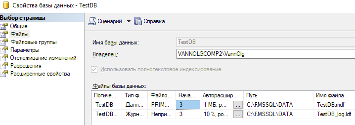
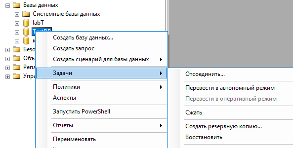
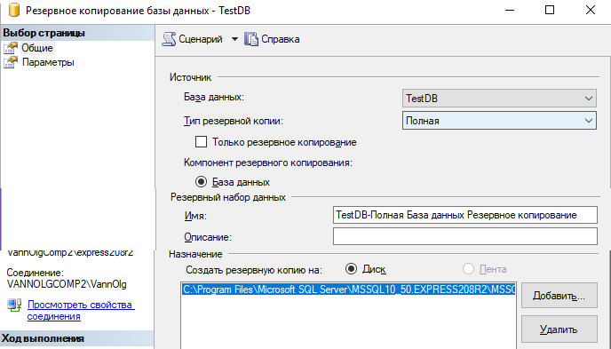
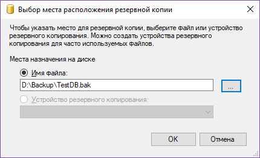
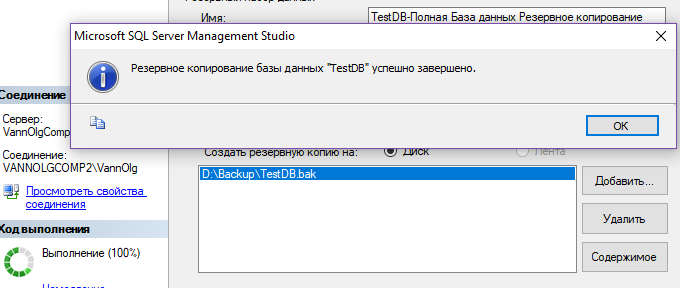
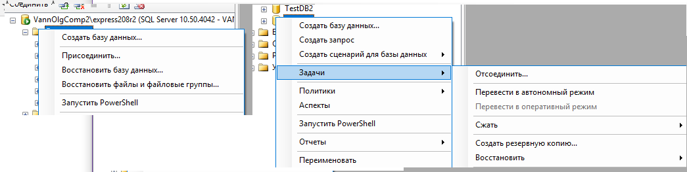

ПРАКТИЧЕСКАЯ РАБОТА №9. КОПИРОВАНИЕ БАЗ ДАННЫХ, ИМПОРТ ЭКСПОРТ ДАННЫХ В СРЕДЕ MS SQL SERVER EXPRESS СРЕДСТВАМИ MANAGEMENT STUDIO
1. КРАТКИЕ ТЕОРЕТИЧЕСКИЕ СВЕДЕНИЯ
Под копированием подразумевается перенос базы данных из одного сервера на другой.
Данные баз данных в среде MS SQL SERVER располагаются на отдельных файлах одноимѐнных базе данных. Но они не могут быть скопированы как обычные файлы в файловой системе, так как их защищает от копирования служба сервера.

Рис.9.1 Файлы базы данных TestDB
Для копирования базы данных необходимо использовать специальные процедуры, предоставляемые MS Management Studio – «Создать резервную копию», «Восстановить».

Рис.9.2 Задачи работы с базой данных, вызываемых
из контекстного меню базы данных, в том числе «Создать резервную копию» и «Восстановить»
При создании резервной копии необходимо задать общие параметры создания копии (страница «Общие» окна копирования) и дополнительные параметры создания копии (Страница «Параметры» окна копирования).
Общие параметры создания копии (рис. 9.3): o Тип копии:
возможно создание полной копии;
разностной (разностная копия, содержит данные об отличии от предшествующей копии. Для баз малого и среднего размера целесообразно выбирать полное копирование).
Компонент резервного копирования (база данных в целом или отдельные файлы).
Параметры «Назначение» они определяют место в которое будет производиться копирование.

Рис.9.3 Диалоговое окно создания резервной копии базы данных
В параметрах назначения необходимо выбрать файл, в котором будет создаваться резервная копия. По умолчанию этот файл одноименный с базой данных и имеет расширение «.bak» и располагается в каталоге, предназначенном для файлов такого типа при установке сервера.
Кнопкой «добавить» можно добавить файл резервной копии. Тогда база будет создаваться на двух файла, что не удобно. Поэтому если есть необходимость создать файл копии отличный от существующего или от установленного по умолчанию нужно добавить требуемый файл, а указание на другие файлы копирования удалить.
При создании нового файла резервной копии можно указать любой путь для расположения резервной копии и любое имя файла.

Рис.9.4 Диалоговое окно добавления нового файла резервной копии
После завершения копирования откроется окно сообщений с подтверждением выполнения данного действия.

Рис.9.5 Успешное завершение создания резервной копии
Восстановление базы данных
Восстановление БД может быть вызвано как из контекстного меню узла Базы данных, так и из узла конкретной базы данных.

Рис.9.6 Восстановление базы данных из файла .bak в новую базу и в существующую
В первом случае в окне восстановления необходимо задать имя базы данных, в которую будет происходить восстановление, во втором случае восстановление будет происходить в существующую базу. При этом данные базы данных будут уничтожены.
2. ПОРЯДОК ВЫПОЛНЕНИЯ РАБОТЫ
1. Выполнить сохранение базы данных в резервную копию.
2. Восстановить базу данных в новую базу данных.
3. Восстановить базу данных в существующую базу данных.
4. Создать отчѐт подтверждающий выполнение отдельных этапов соответствующими копиями экрана.
3. ЗАДАНИЯ ДЛЯ ВЫПОЛНЕНИЯ
В качестве исходной базы данных для создания резервной копии необходимо взять базу данных с результатами ранее выполненных лабораторных работ.
4. КОНТРОЛЬНЫЕ ВОПРОСЫ
1. В виде чего хранятся данных базы данных в среде MS SQL Server?
2. Какие способы могут быть использованы для копирование базы данных?
3. Каким какие параметры должны быть заданы при создании резервной копии?
4. Из каких узлов обозревателя объектов сервера можно выполнить восстановление базы данных? Какие особенности восстановления при этом получаются?